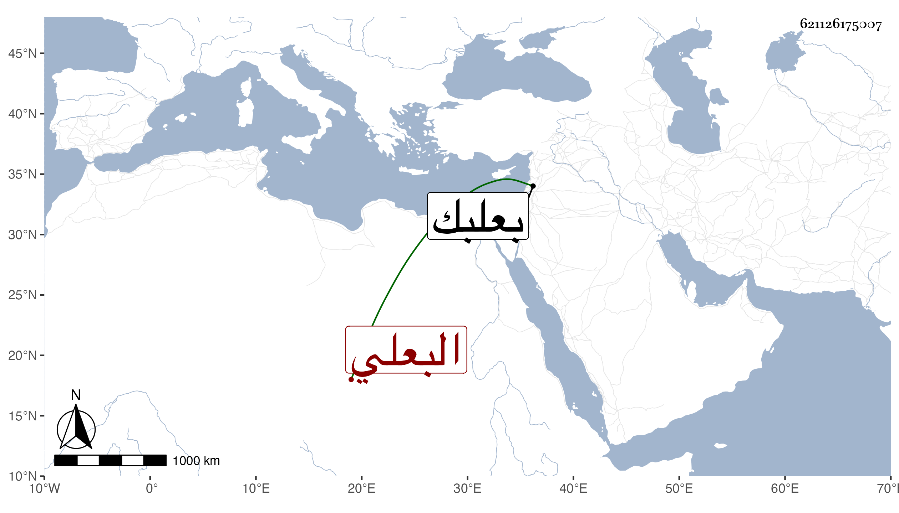

0902Sakhawi.DawLamic.ITO20230111-ara1.EIS1600.621126175007
Biography ID: 621126175007
1222
يوسف بن علي بن الزين عمر بن محمد بن الشيخ مسعود البعلي المرحل ويعرف بالجنثاني بكسر الجيم ثم نون ساكنة ثم مثلثة وأظنه قريب البدر محمد بن علي ابن عبد الرحيم الماضي . ولد قبيل التسعين ببعلبك وسمع بها على ابن الزعبوب الصحيح أنا به الحجار وحدث سمع منه الطلبة ولقيته ببلده فقرأت الثلاثيات وكان خيرا يكتسب من الرحال . مات بعد الستين أو محاذيها رحمه الله .
